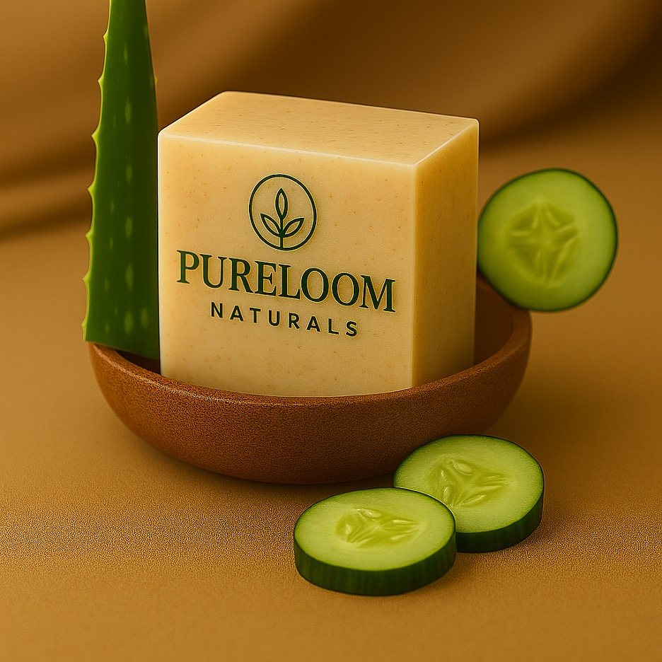

← Back to Products

HandmadeHandmade Soap
Aloe Vera & Cucumber
$11.99
Our aloe vera & cucumber soap is a gentle, cooling bar formulated to cleanse without drying. Infused with soothing aloe vera and crisp cucumber, it helps calm irritated skin while restoring moisture and balance. This soap leaves the skin feeling fresh, clean, and comfortably hydrated — perfect for everyday use, especially in warm climates.
Ingredients
Virgin olive oil, pure coconut oil, castor oil, palmolein oil, sweet almond oil, rice bran oil, aloe vera extract, cucumber extract, water, salt, sugar, and sodium hydroxide.
Highlights
- 100% natural and handmade
- Cooling, soothing, and hydrating
- Ideal for sensitive, normal, and combination skin
- Free from artificial colorants, artificial fragrances, parabens, sulfates, phthalates, and petroleum